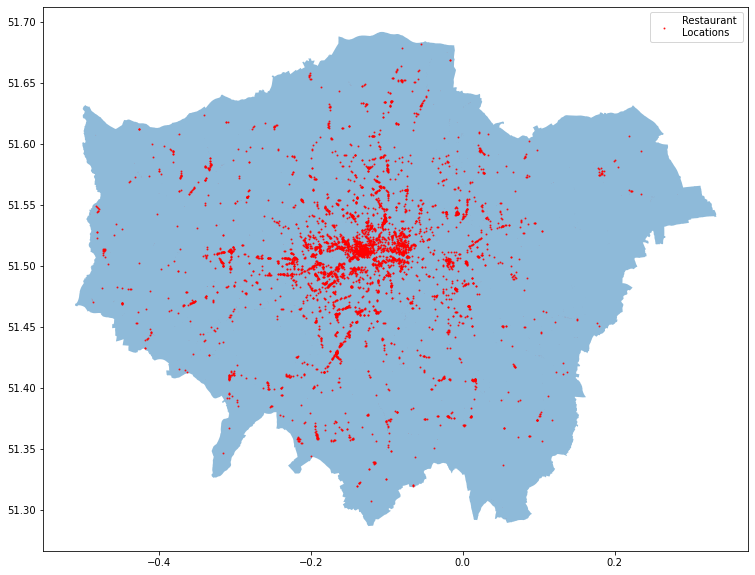
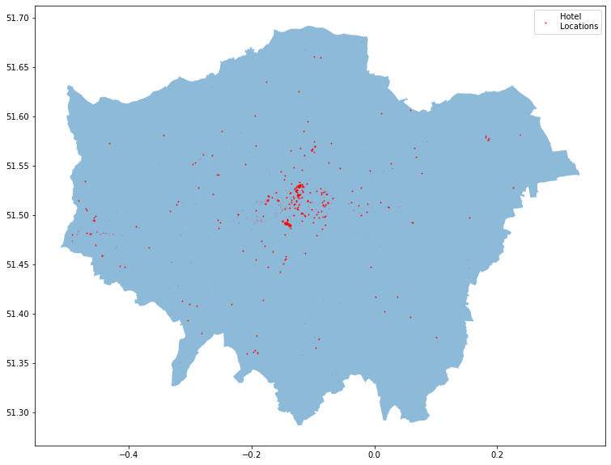

This notebook demonstrates the process of gathering local amenity data from OpenStreetMap. Local amenity data of this sort could be used to improve the accuracy of a whole range of ML models. In this notebook, the idea is that that presence of these amenities could help us predict what an AirBnb host might charge.
In this notebook we cover the following:
How to make basic requests from OpenStreetMap using OSMnx
How to efficiently calculate the number of amenities that fall within a 5 minute walk of each AirBnb (approximately 0.5km distance).
2. Accessing OSM with OSMnx
# Import visualisation modulesimport matplotlib as mpl %matplotlib inline import matplotlib.pyplot as plt #Import modulesimport osmnx as oximport pandas as pdimport geopandas as gpdimport numpy as npimport warnings warnings.simplefilter(action='ignore')ox.__version__
'1.2.2'
import os
Basic OSMnx Query
All queries follow the following dictionary format: {‘feature_type’ : ‘feature’}. A full list of OSMnx features can be found here. Note, the quality and accuracy of features may vary. OSMnx returns a geopandas dataframe (basically a pandas dataframe with longitude and latitude geometry built into it). It may take a few minutes to download the data.
# Set up queryquery = {'amenity':'restaurant'}# Run query# Jin: I change ox.pois.pois_from_place to ox.geometries.geometries_from_place, for the adjustment of osmnx version change.# details: https://stackoverflow.com/questions/71559143/what-happened-to-the-pois-module-in-osmnx-and-what-to-use-nowrestaurants_gdf = ox.geometries.geometries_from_place('Greater London, UK', tags = query, which_result=1)restaurants_gdf.head(5)
# Download London's Boundarylondon_gdf = ox.geocoder.geocode_to_gdf('Greater London, UK')# Set up a plot axisfig, ax = plt.subplots(figsize = (15,10))# Visualise both on the plotlondon_gdf.plot(ax = ax, alpha =0.5)restaurants_gdf.plot(ax = ax, markersize =1, color ='red', alpha =0.8, label ='Restaurant \nLocations')plt.legend()
<matplotlib.legend.Legend at 0x7fe5eeef8d00>

# Download London's Boundarylondon_gdf = ox.geocoder.geocode_to_gdf('Greater London, UK')# Set up a plot axisfig, ax = plt.subplots(figsize = (15,10))# Visualise both on the plotlondon_gdf.plot(ax = ax, alpha =0.5)hotel1_gdf.plot(ax = ax, markersize =1, color ='red', alpha =0.8, label ='Hotel \nLocations')plt.legend()
<matplotlib.legend.Legend at 0x7fe5ddd35e70>

Assembling Data
OSMNX returns most restaurant properties as a single point (eg. Longitude / Latitude coordinates). However, a few are returned as polygons (a shape). This usually happens when the property is particularly large. Working with polygons is a lot more complicated than working with points, so below, we will work out the centre point of any polygons. We do this using Spapely.
Before we carry out any calculations we need to convert our point coordinates to a local projection. As you know, the earth is a sphere. A projection is a method of flattening the surface of the earth so we can display it on a map. The problem, however, is that there is no way to flatten the surface of a sphere in a way that all parts are sized proportionately equal.
The only way to get around this is to find a projection that makes the specific part of the world that you are interested in proportionately equal. These are called local UTM Coordinate Referencing System (CRS). Fortunately, OSMnx has a method built into it that allows us to find the correct local UTM.
<Derived Projected CRS: +proj=utm +zone=30 +ellps=WGS84 +datum=WGS84 +unit ...>
Name: unknown
Axis Info [cartesian]:
- E[east]: Easting (metre)
- N[north]: Northing (metre)
Area of Use:
- undefined
Coordinate Operation:
- name: UTM zone 30N
- method: Transverse Mercator
Datum: World Geodetic System 1984
- Ellipsoid: WGS 84
- Prime Meridian: Greenwich
Next we import our AirBnb room data and convert it into a Geographic dataframe.
# Create a Geographic data of our air_df = pd.read_csv('airbnb_rooms.csv')# Note below: "crs = 4326" is our way of telling geopandas that the initial projection uses the standard# longitude latitude coordinates. You can't manipulate the CRS if you haven't set one initially.air_gdf = gpd.GeoDataFrame(air_df, geometry = gpd.points_from_xy(air_df.longitude, air_df.latitude), crs =4326)air_gdf = air_gdf.to_crs(local_utm_crs)#Convert amenities into local projection (amenities already had an initial CRS set when we downloaded it via OSMnx)restaurants_gdf = restaurants_gdf.to_crs(local_utm_crs)
FileNotFoundError: [Errno 2] No such file or directory: 'airbnb_rooms.csv'
Calculating Distance Using a KDTree
So next, we need to iterate through each AirBnb property and work out how many restaurants there are within a 10 minute walk (approximately 1km). I do this using a K-D Tree. Explaining how K-D Trees work is outside the scope of this article, but in short, they’re a super efficient way of searching through our 80,000 AirBnb rooms and 6,000 restaurants and figuring out which ones are close to which. First we set up the tree of all restaurant points.
import timefrom scipy import spatialfrom scipy.spatial import KDTree# Turn long/lats into an array for ScipyLon = restaurants_gdf.geometry.apply(lambda x: x.x).valuesLat = restaurants_gdf.geometry.apply(lambda x: x.y).valuescoords =list(zip(Lat,Lon))tree = spatial.KDTree(coords) # Create a KDTree of all tube stations
Then we create a function which we will run on each of our AirBnb rooms. The function will query the tree, and find the 500 closest restaurants along with calculating their distances from the AirBnb property. We use a figure of 500 in the hope that no property has more than 500 restaurants close to it.
def find_points_closeby(lat_lon, k =500, max_distance =1000 ):''' Queries a pre-existing kd tree and returns the number of points within x distance of long/lat point. lat_lon: A longitude and latitude pairings in the (y, x) tuple form. k: The maximum number of closest points to query max_distance: The maximum distance (in meters) ''' results = tree.query((lat_lon), k = k, distance_upper_bound= max_distance) zipped_results =list(zip(results[0], results[1])) zipped_results = [i for i in zipped_results if i[0] != np.inf]returnlen(zipped_results)
And finally, we set up a timer and apply the function to each AirBnb row
# Set up a timer import time t0 = time.time()#Apply the functionair_gdf['restaurants'] = air_gdf.apply(lambda row: find_points_closeby( (row.geometry.y, row.geometry.x)) , axis =1)# Report the timetime_passed =round(time.time() - t0, 2)print ("Completed in %s seconds"% (time_passed))
You now know how many restaurants there are within a 10-minute walk of each AirBnb property. You could repeat this process for bars, shops, subway stations, tourist hotspots, public parks, and whatever else you think may influence the price of an AirBnb property